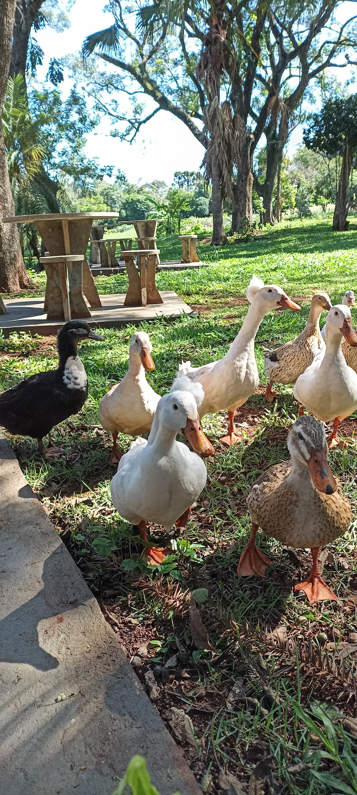

Sobre a Chácara e livraria Kfé
Sobre a Chácara e livraria Kfé: Localizada em um lugar tranquilo e com muita natureza ao redor.
Venha relaxar no seu momento de leitura e aproveitar o melhor de uma brisa fresca e um café quentinho. Sem contar com nosso acervo de livros disponiveis.
A missão da Chacará e livraria Kfé é : Ser um lugar para recarregar as energias e esquecer o stress da cidade grande. Você pode pegar sua mesa em nossos espaços únicos, com o maior silêncio possivel para ler seus livros, ou trocar uma ideia com seus amigos.
Venha nos visitar, e tenha o seu momento de relaxamento profundo.
Estamos aqui !
Nosso estabelecimento está localizado em um cantinho especial da cidade. üòâ
Benefícios
- Contato com a natureza;
- Amigos animais;
- Ambientes únicos;
- Livraria gigante;
- Cafés especiais;
- Eventos Culturais;